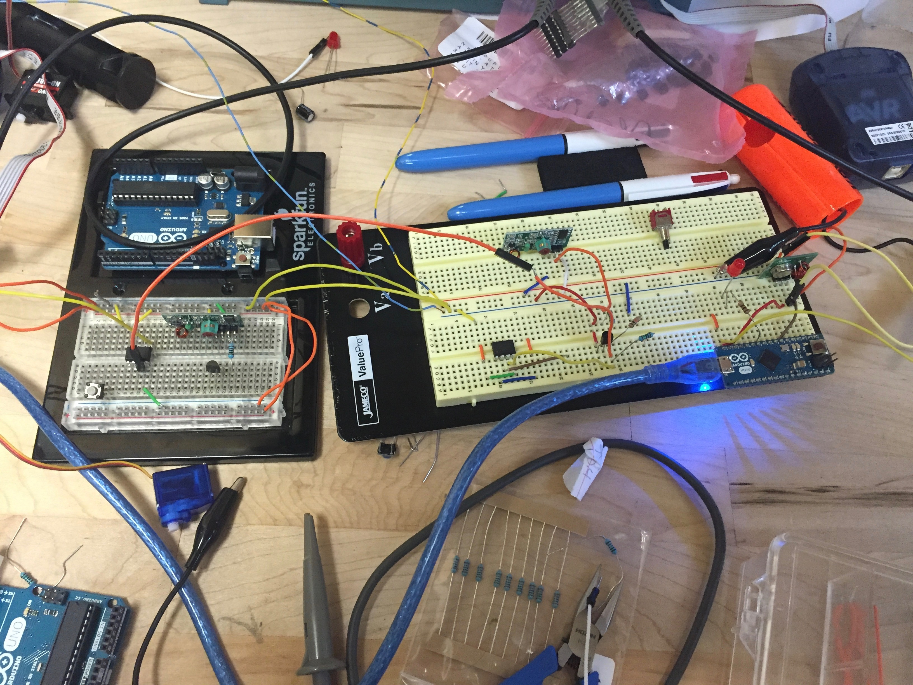
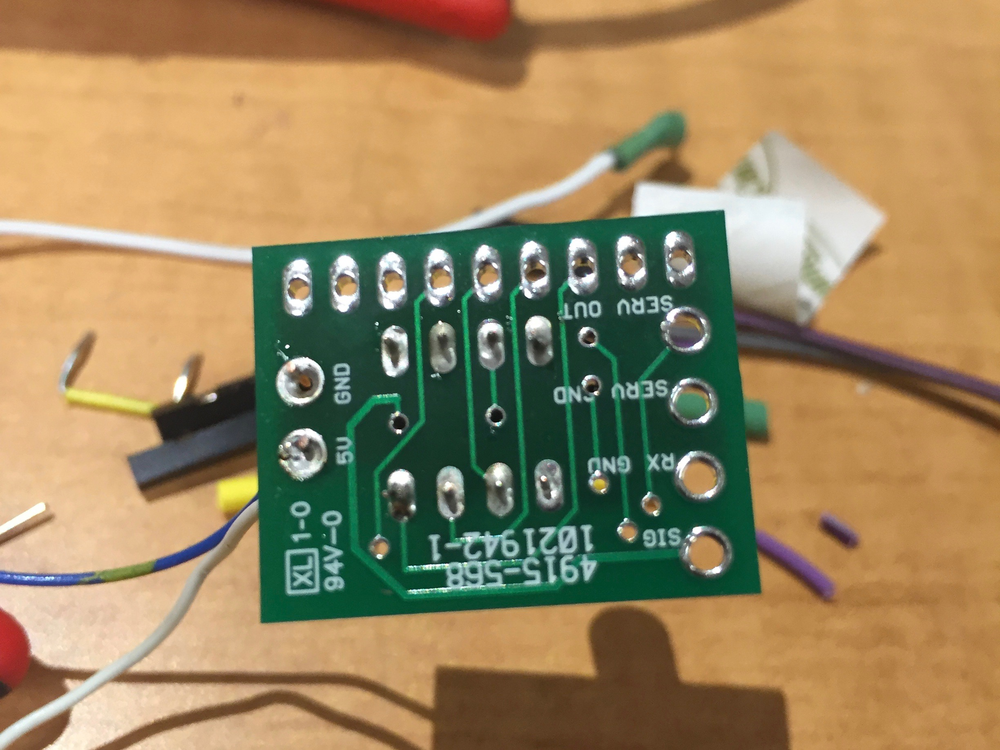
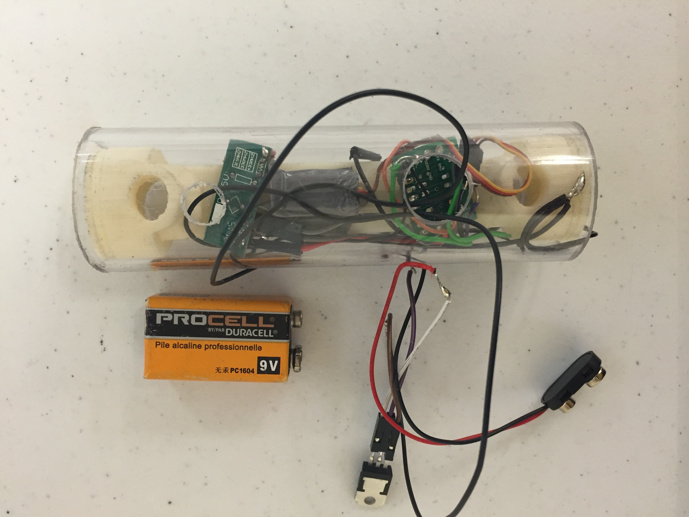

A Better Bike Lock
Last year, three friends and I took on a project sponsored by
Kryptonite, a worldwide leader
in action sports security, for our senior capstone project at Johns Hopkins.
Our goal, essentially, was to make the bicycle lock easier to use. The biggest
improvement we could aim for, we agreed, was to design a lock that could be
used easily with one hand and one continuous motion.
While I'm unable to discuss details of our design, on this page I'll talk
a bit about my role in the design process and the skills I picked up along
the way.
What is a bike lock?
If you distill the idea of a lock down to its fundamentals, you realize
that even the most basic lock needs three things:
- A credential. This is the information that proves you are the
rightful owner of the bike that the lock is protecting. In a standard lock, this information is coded into a metal key, in the form of the exact shapes and sizes of regions along its surface. In any case, the credential is always something you have (a key), something you are (biometric identification), or something you know (a password).
- A gatekeeper. Every lock needs some mechanism to determine who
has the real credential and who is just an impostor. In a pin-and-tumbler lock,
the gate keeper is a series of spring-loaded pins that each have to be depressed
to the correct position to allow rotation of the lock's inner cylinder. The
gatekeeper is usually coupled to the credential - if the credential is a
fingerprint, the gatekeeper is probably a fingerprint sensor!
- A gate (opener). The lock needs a physical object blocking the path to the bike, and some way to open it provided only by the gatekeeper. The gate is almost always a thick piece of hardened steel called a deadbolt. On a standard lock, the gate opener is a twisting motion provided by the user once the key is inserted. If you have an electronic lock, your gate opener is probably some kind of motor or linear actuator.
Two design paths
Early on in the project, the team decided there were two possible ways we could
go about this:
- The first was to completely redesign the lock, starting with its
most intricate mechanisms all the way up through its shape and user interface. Could we reinvent the key so that it could be inserted more easily, without holding the lock for stability? What about a key that didn't require a twisting motion once inserted?
- The second was to keep the lock's form factor mostly the same but replace its credential, gatekeeper, and gate opener with electronics.
We determined that initially, both design paths were worth exploring. My friend Alex
and I agreed to spend the majority of our time on the second design path, so we
started looking at prior work in this area and brainstorming concepts.
Electronics Prototyping
Our prototyping process began like you might expect - by sitting at a lab bench hacking with an arduino and a bunch of sensors, wireless modules, and other odds and ends. While this setup was great for testing things like reliability and power consumption for different components, we knew it wouldn't work for making prototypes ready for real testing with real bikers.
(Side note: in hindsight, it was at this point that we should have realized that we didn't need functional electronics to do testing. A better approach would have been to think of different form factors and user interfaces made possible by the electronics we were using, then make plastic "locks" that didn't work but allowed us to test what bikers thought of them. We could have learned this and a lot more from resources like
this blog post
from Ben Einstein at Bolt.)

Since we wanted to make prototypes with both form and function resembling that of an actual electronic lock, the arduinos were just too big. So, I learned the basics of programming AVRs and started using them in our prototypes. This was a daunting task since I had never before learned to program microcontrollers, but in a week or two I knew how to flash ATTiny's and take advantage of their EEPROM, a bunch of their timers, sleep modes/interrupts, and a few other capabilities. I was also learning more about circuit design and clever ways to use transistors to save power.
To fit all our components inside a bike lock, we printed a few custom PCBs. I mostly just watched Alex put the gerber files together, but it was a great way to learn about how it's done!

As I said before, one of our goals was to keep the form factor of a bike lock mostly the same. There were a couple reasons for this. The first was that we wanted to make the process more like a scientific experiment, where typically only one variable is changed at a time. If we did end up making a lock easier to use, we wanted to be sure it was because of the embedded electronic system we had designed, and not some other change to the lock. The second reason was that it made prototyping more efficient and iterating much faster. For most of our early prototypes, we were able to 3D print housings similar to what you would find in a standard lock, cut a tube of acrylic, and stuff our circuits inside.

Site designed by Adrian Pearl.